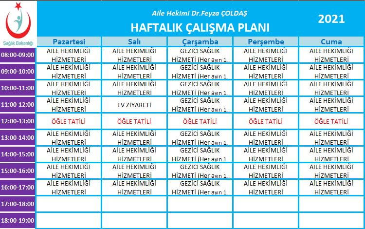

Doktor Listesi ve Bilgileri:
-Dr.Feyza ÇOLDAŞ 190110 Nolu aile hekimi
İletişim Bilgileri:
Alacahöyük Aile Sağlığı Merkezi No:113/4
Alacahöyük Beldesi/ALACA/ÇORUM
Tel:0 364 422 70 26

Kurumsal
Aile Sağlığı Merkezimizde amacımız kayıtlı nüfusumuzun sağlığını geliştirmek, korumak, tedavi etmek ve rehabilitasyonu için sağlık hizmetine katkı sağlayan tüm toplum kaynakları ile işbirliği içinde olarak, bilimin güncel katkısına açık, güvenilir, güler yüzlü, iletişime ve gelişmeye açık, kolay ulaşılan, sağlığı vazgeçilmez bir insan hakkı olarak gören ve bağlı bulunduğu bireylerin tüm sağlık sorumluluğunu üstlenen örnek bir Aile Sağlığı Merkezi olmaktır.
Kadromuz
Aile Hekimi : Dr.Feyza ÇOLDAŞ
Birim Kodu : 190110 Nolu Aile Hekimi
Aile Sağlığı Elemanı :Hemşire Menekşe ÖZTIRAK
Blog
-
ANNE SÜTÜ VE EMZİRME
Anne sütü; yenidoğanda optimum büyüme ve gelişme için gerekli olan tüm sıvı, enerji ve...
-
ANNE ADAYLARI VE HAMİLE KADINLARDA BESLENME
Ülkemizde “gebelik öncesi ve gebelik döneminde yetersiz ve dengesiz beslenme” anne ve bebek ölümlerinde...
-
GRİP SALGINI VE BESLENME
Kış mevsiminin yaşandığı şu günlerde havaların soğumasıyla birlikte başta küresel grip salgını olmak üzere...
-
ANEMİ
Kansızlık olarak bildiğimiz rahatsızlık aslında vücuttaki kan miktarının az olması değil, kanımızdaki...
-
DİYABET
Pankreastan salgılanan insülin hormonunun yetersizliği veya insulinin etkisine dokularda...